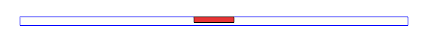
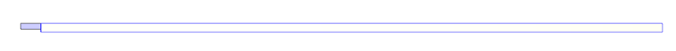

KCLab Injection AI
Simple Injection Sprue Pressure Predictor
English
API: 확인 중
Simple Injection 형상과 공정 조건을 입력하면 Moldex3D Sprue Pressure Curve를 예측합니다. 기존 DOE 조건을 불러온 뒤 직접 값을 수정할 수 있고, 물리적으로 불가능하거나 위험한 조건은 Prevention Check로 미리 확인합니다.
형상 미리보기
DOE 기반 3D preview
3D 형상 준비 중
-
L-
W-
t-
D-


예측 준비 완료
Geometry와 Process 조합을 선택하면 Sprue Pressure를 예측할 수 있습니다.